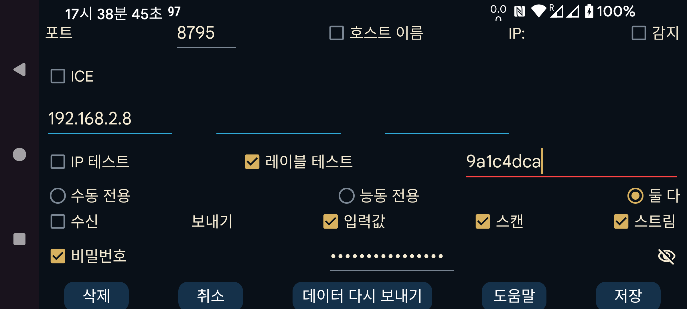

ar be de es fr hi it ja ko nl pl pt ru sv tr uk uz zh en
다른 Juggluco 인스턴스와의 연결을 지정합니다. 한 기기의 Juggluco는 IP/TCP를 통해 다른 기기의 Juggluco로 데이터를 보냅니다. 연결을 만들려면 한쪽 Juggluco가 포트에서 연결을 기다리고 다른 쪽이 그 포트로 접속해야 합니다. 이 Juggluco가 연결을 기다리는 포트는 이전 화면(왼쪽 가운데 메뉴→미러)에 표시되어 있습니다. 여기에서는 이 Juggluco가 능동적으로 접속할 때 접속할 상대방의 포트를 지정합니다. 이 Juggluco가 포트에서 연결을 기다릴 수 없으면 “능동 전용”을 선택하십시오. 상대방이 포트에서 연결을 기다릴 수 없으면 “수동 전용”을 선택하고, 그렇지 않으면 “둘 다”를 선택한 상태로 두십시오. 여기에서 능동 전용을 선택했다면 상대방 Juggluco에서는 수동 전용을, 여기에서 수동 전용을 선택했다면 상대방에서는 능동 전용을, 여기에서 둘 다를 선택했다면 상대방에서도 둘 다를 지정해야 합니다.
이 Juggluco가 능동적으로 접속하는 경우에는 접속할 IP 주소를 지정해야 합니다. 상대 호스트에 여러 IP 주소가 있으면 둘 이상을 지정할 수 있습니다. 예를 들어 두 기기가 때로는 가정 네트워크로 연결되고 때로는 휴대용 핫스팟으로 직접 연결되는 경우입니다.
경고: 서로 다른 여러 기기의 IP 주소를 함께 지정하지 마십시오. 그렇게 하면 각 기기가 데이터의 일부만 받게 됩니다.
호스트 이름: IP 주소 대신 하나의 호스트 이름을 지정합니다. 이 경우 연결이 네임서버에 의존하므로 더 느려지고 네임서버 연결 장애의 영향을 받습니다. 고정 IP를 설정할 수 없고 동적 IP에 호스트 이름이 자동으로 할당되는 경우에만 켜십시오. ‘능동 전용’을 제외한 모든 경우에는 ‘감지’를 선택할 수 있습니다. 그러면 Juggluco는 처음 접속한 IP 주소를 상대방의 IP 주소로 저장합니다. 올바른 기기가 접속했는지는 두 가지 방법으로 확인할 수 있습니다. ‘IP 테스트’를 선택하면 IP를 검사합니다. 레이블 테스트를 선택하면 양쪽에 같은 레이블이 지정된 경우에만 연결됩니다.
이 앱을 미러 앱으로 사용하려면 수신을 선택하십시오.
이 기기를 데이터 송신자로 사용하려면 어떤 데이터를 보낼지 지정해야 합니다.
입력값: 사용자가 입력한 투여량, 음식 및 운동 데이터입니다.
스캔: 센서를 스캔하여 받은 데이터입니다. Libre 2에서는 스캔 및 기록 데이터이고, Libre 3에서는 Bluetooth로 센서에 접근하는 데 필요한 데이터만 해당합니다.
스트림: Bluetooth로 받은 데이터입니다. Libre 3에서는 기록 데이터도 포함됩니다.
수신 기기에 이미 일부 데이터가 있는 경우가 있습니다. 데이터가 어느 시점까지 이미 있는지 지정할 수 있습니다.
시작: 데이터가 없음
현재: 모든 데이터가 있음
또는 화면의 시작 위치로 정해지는 특정 날짜를 지정할 수 있습니다.
기존 연결에 새로운 데이터 소스를 추가하면 시작 날짜는 새로 추가된 데이터 소스에만 적용됩니다. 예를 들어 스캔과 스트림이 이미 호스트로 전송되고 있고 입력값을 새로 추가했다면, 시작 날짜는 전송할 입력값에만 적용됩니다.
두 기기가 안전하지 않은 연결을 통해 통신하는 경우, 양쪽 연결에 동일한 최대 16자의 비밀번호를 지정하여 데이터에 서명하고 암호화할 수 있습니다. 지정한 내용을 저장하려면 저장을 선택하십시오. 삭제는 이 연결 설정을 삭제합니다.
QR: QR 코드를 스캔하여 연결의 반대쪽 설정을 만듭니다.
가장 단순한 경우에는 모든 연결이 가정 네트워크 안에 있으므로 로컬 IP 주소를 사용할 수 있습니다. Wi-Fi를 통해 인터넷으로 연결할 수도 있습니다. 이 경우 외부 포트를 가정 네트워크의 IP 주소와 포트로 전달하는 방법은 모뎀 설명서를 참조하십시오.
모바일 데이터로 인터넷에 연결된 두 스마트폰은 둘 중 하나가 네트워크 포트에서 연결을 기다릴 수 있다면 서로 직접 연결할 수 있습니다. 둘 다 그럴 수 없다면(예: 둘 다 개별 공인 IP가 없는 경우) 제3의 기기를 통해 서로 통신할 수 있습니다. 한 가지 방법은 집에서 모뎀을 통해 인터넷에 연결된 Android 기기(최소 Android 4.4)에서 Juggluco를 실행하는 것입니다. 다른 방법은 컴퓨터(예: PC 또는 Amazon AWS)에서 Juggluco에 포함된 명령줄 프로그램을 실행하는 것입니다: https://www.juggluco.nl/Juggluco/cmdline/index.html
포트 포워딩 설명:
https://portforward.com/how-to-port-forward/
https://stevessmarthomeguide.com/understanding-port-forwarding/
NFC가 없는 기기에서도 Bluetooth를 통해 혈당값을 받을 수 있습니다(https://www.juggluco.nl/Juggluco/mirror 참조). NFC가 있는 기기에서 NFC로 센서를 초기화한 뒤 스캔 및 스트림 데이터를 NFC가 없는 기기로 보내십시오. 그 다음 스트림 데이터에 대한 연결 방향을 반대로 하고, NFC 기기에서는 센서와의 Bluetooth 연결을 끄고 NFC가 없는 기기에서는 켜십시오. 또한 NFC 기기에서는 “Bluetooth로 센서 연결”을 끄고 NFC가 없는 기기에서는 켜십시오. 이렇게 하면 한 기기로 스캔하고 다른 기기에서 Bluetooth로 혈당값을 받을 수 있습니다. 그러나 모든 기기에는 모든 센서 데이터가 있어야 합니다. 기기들이 데이터를 교환한다면 항상 스캔 데이터와 스트림 데이터를 둘 다 받아야 합니다. 따라서 스트림 데이터는 항상 NFC 기기로 다시 보내고, 스캔 데이터는 NFC가 없는 기기로 다시 보내야 합니다. 그렇지 않으면 데이터 동기화가 어긋나 오래된 인증 데이터가 사용되거나 새 데이터가 오래된 데이터로 덮어써질 수 있습니다.
입력값 데이터는 이와 완전히 독립적입니다.
연결을 만드는 완전히 다른 방법으로 ICE(Interactive Connectivity Establishment)가 있습니다. 포트 포워딩을 설정하지 않고도 두 Juggluco 인스턴스 사이에 연결을 만들 수 있습니다. 대부분의 경우 두 휴대전화가 중간 서버 없이 직접 연결됩니다. 어떤 경우에는 직접 연결이 불가능하여 TURN 서버가 필요합니다. TURN 서버는 왼쪽 가운데 메뉴→미러→TURN 서버에서 지정할 수 있습니다. 다른 경우에는 두 휴대전화를 서로 찾아 연결시키는 데에만 서버가 필요합니다. 이를 위해서는 연결의 양쪽만 공유하고 다른 Juggluco 사용자는 사용하지 않는 “ICE 레이블”을 지정해야 합니다. 연결의 한쪽은 0, 다른 쪽은 1을 지정해야 합니다. 또한 양쪽이 같은 레이블을 사용해야 하지만, 이 레이블은 해당 휴대전화들 안에서만 고유하면 됩니다. 여기에서 모든 항목을 직접 지정하는 대신 왼쪽 가운데 메뉴→미러→자동 QR을 사용하여 연결을 자동으로 만들고 반대쪽 휴대전화로 QR 코드를 스캔할 수 있습니다.
연결 양쪽의 설정은 정확히 서로 보완되도록 지정해야 합니다. 항목 하나만 빠져도 데이터 전송이 불가능해질 수 있습니다.
연결이 멈추면 Wi-Fi를 껐다 켜거나 동기화를 눌러 다시 설정해야 할 수 있습니다. 또한 능동 전용-수동 전용 연결을 둘 다로 바꾸거나 그 반대로 바꾸면 해결되는 경우도 있습니다.
연결 방식이 바뀌면 IP 주소도 바뀔 수 있다는 점을 고려해야 합니다. 예를 들어 가정 네트워크에서 사용하는 IP 주소와 휴대용 핫스팟을 통해 연결할 때 사용하는 IP 주소는 서로 다릅니다.